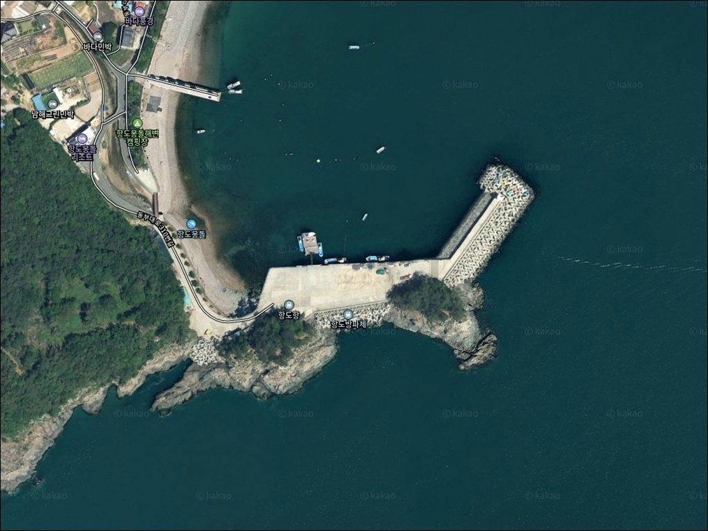
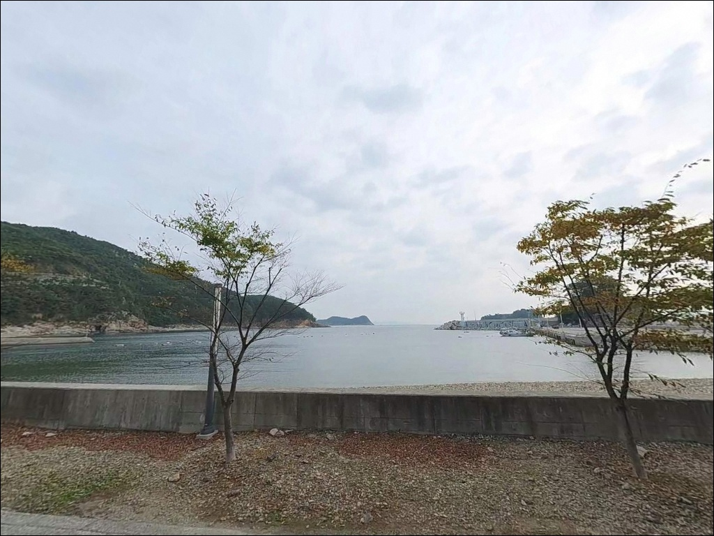
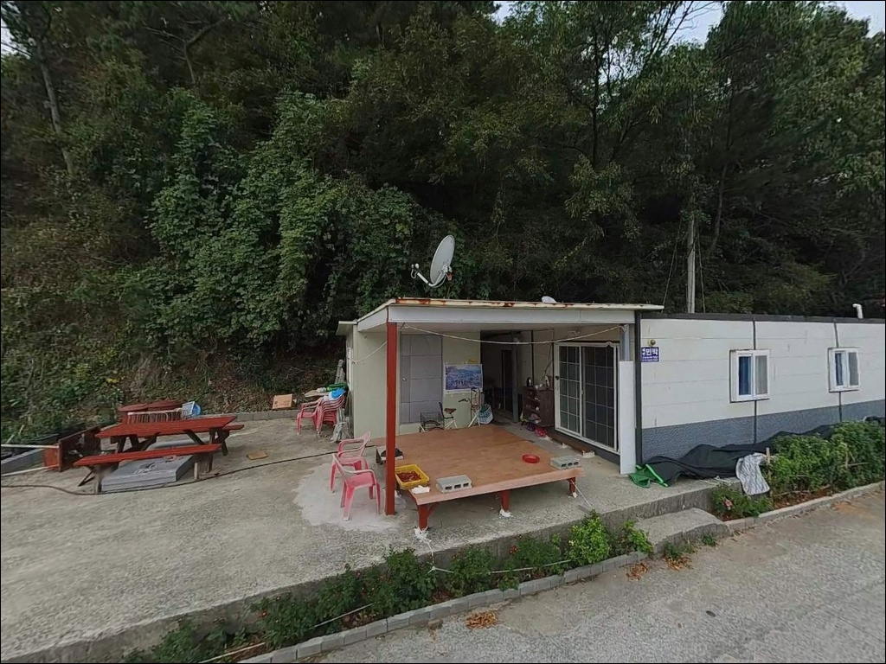
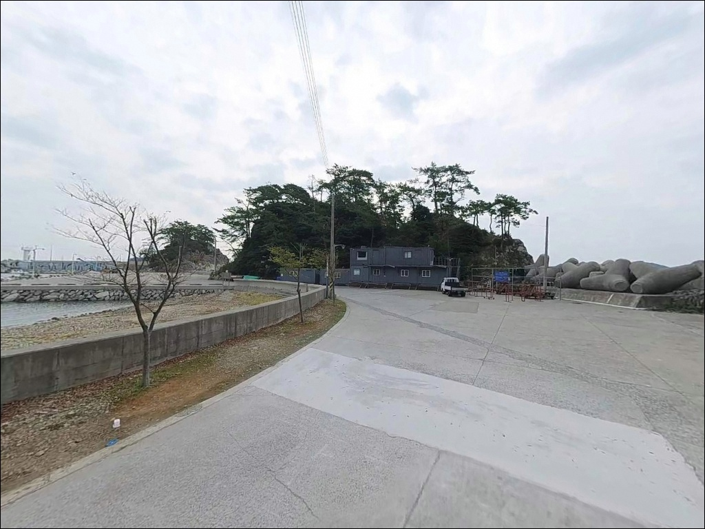
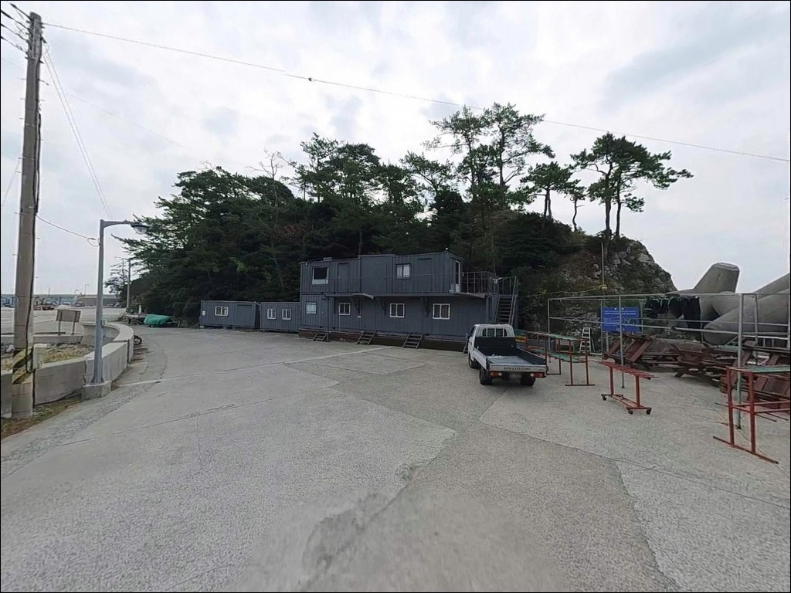
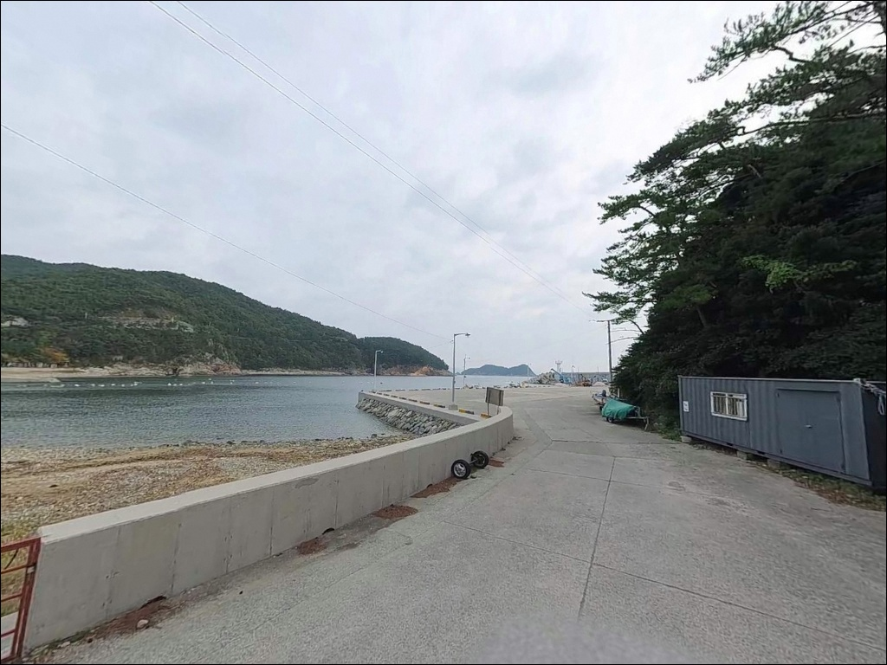
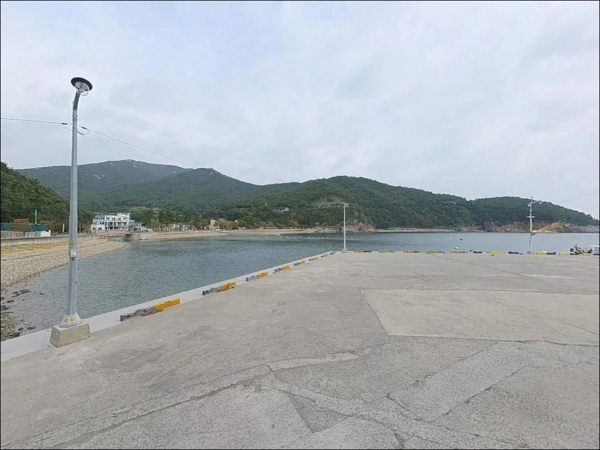
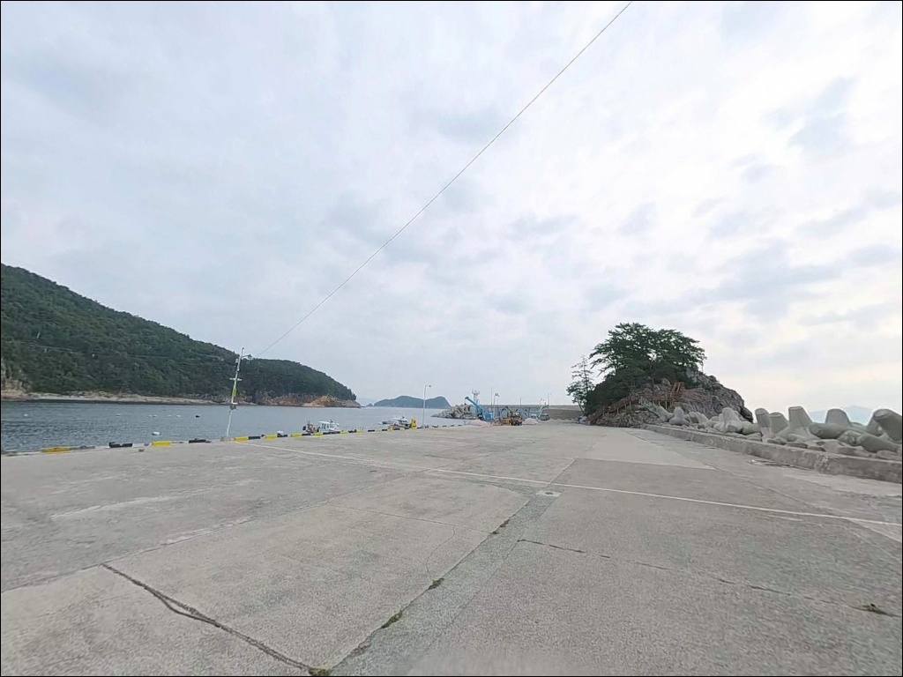
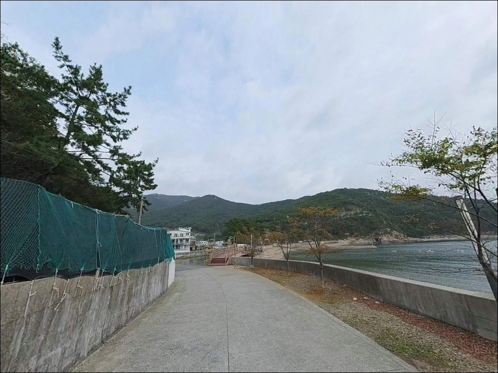

간조 시 바닷길 열리는 항도항, 방파제 끝단과 홈통에서 달라진 에깅 반응
이 페이지에는 광고(제휴 링크 포함)가 있으며, 광고 링크를 통해 구매하면 운영자가 판매 수익 또는 수수료를 받을 수 있습니다. 포인트 사진: 카카오맵 스카이뷰·로드뷰. 이 페이지의 지도·사진 이미지는 카카오맵의 실제 서비스 이미지와 다를 수 있습니다.


포인트 안내
항도항
경남 남해군 미조면 송정리 391-13
항도항에서 방파제 한 곳만 보고 자리를 잡으면
실제 조류가 집중되는 홈통 갯바위와
외항 콧부리 구간을 그냥 지나치게 됩니다.
이 포인트는 큰방파제·갯바위·홈통 세 구간이
각기 다른 낚시 방식에 맞게 나뉘어 있어
구간별 특성을 먼저 파악하는 것이 출조의 전제입니다.
이 글은 항도항의
진입 동선, 차박 여건, 구간별 낚시 분석,
적합한 낚시 스타일과 플랜B 동선에 집중합니다.
조황 단정이나 특정 어종 보장은
이 글의 범위에 포함되지 않습니다.

1. 진입 동선과 포인트 접근성
항도항은 미조면 동부대로에서
송정리 방향 해안로를 따라 진입합니다.
물미해안도로 본선은 굴곡이 심한
2차선 구조이며, 항도마을로 들어서는
갈림길부터는 단일 차선 수준의
마을 소로로 이어집니다.
대형 차량은 마을 안쪽 골목에서
회차 공간이 제한되므로
출발 전 위성지도 확인이 기본입니다.
방파제 시작 지점 옆
넓은 아스팔트 주차 부지가 확인됩니다.
항도몽돌해변 좌측 공터와
어촌체험마을 시설 앞 공간도
주차 후보로 활용 가능합니다.
항구 내 부지가 비교적 넓어
대형 SUV와 캠핑카도 회차가 가능한 수준입니다.
방파제 상단에는 전망대가 설치되어 있어
방파제 전 구간이 도보로 접근 가능합니다.
갯바위 구간은 방파제 진입로 길목에
집중 분포하며, 홈통 갯바위까지
별도 이동 동선이 필요합니다.

2. 차박 환경과 야간 체류 여건
항도항은 항도야영장이 방파제 바로 인접한
송정리 355-20에 등록 운영됩니다.
일반야영장으로 등록되어 있으며
사계절, 평일·주말 모두 운영되고
개인 트레일러 입장이 가능한 시설을 갖추고 있습니다.
낚시와 야영을 한 자리에서 운용하기
좋은 구조입니다.
야영장과 별개로 방파제 주변 공터에서
단기 체류를 병행하는 방식도 가능합니다.
항도마을은 어촌체험마을로 운영되어
민가와 야영장 이용객이 함께 있는 환경입니다.
방파제 끝 전망대와 해변 데크 구간에
가로등이 설치되어 있어
야간 활동은 편리한 편이지만,
소음 관리에는 각별히 주의해야 합니다.
외항 방향은 남쪽 외해로 열려 있어
남풍 강화 시 파도 영향을 받습니다.
방파제 내항 쪽은 마을 방향으로 차폐되어
상대적으로 잔잔한 환경입니다.
바람 예보를 당일 아침 다시 확인하는 것이
체류 여건 판단의 기본입니다.


3. 주변 편의시설 및 인프라 현황
반경 3km 이내에는 대형 편의점이나 마트가
확인되지 않습니다.
항도마을 인근 편의 시설은 희소한 편으로
식수·얼음·낚시 소품 모두 사전 준비가 필요합니다.
항도 어촌체험마을 시설 내
소규모 매점 존재 여부는 현장에서
확인해야 합니다.
차량으로 5분 거리인 송정솔바람해변 근처에
편의점과 식당 이용이 가능합니다.
반경 10km권의 미조항 일대에는
식당·마트·미조항음식특구가 운영 중으로
장거리 이동 없이 기본 보급을 해결할 수 있습니다.
미조항은 차량 약 10분 거리입니다.
응급 상황 대비로는 미조면 소재지 약국·보건소와
남해읍내 종합병원을 확인해 두면 됩니다.
남해읍까지는 차량 약 25분 거리입니다.

4. 진입 전 반드시 챙겨야 할 준비사항
항도항은 남해 동남쪽 외해와 직접 연결된
구조입니다.
기상이 빠르게 변하는 해역이라
출조 전 해양경찰청 기상 및 파고 예보를
반드시 확인합니다.
남풍이 강화되는 날은 외항 방파제와
갯바위에서 즉시 철수하는 것이 원칙입니다.
남해군 바닷가에는 낚시통제구역이
설정된 구간이 여러 곳 있습니다.
항도항 일대도 예외가 아닐 수 있으므로
출조 전 해당 포인트의 낚시 가능 여부를
현지에서 반드시 확인해야 합니다.
갯바위와 테트라포드 구간은
밑걸림으로 인한 채비 손실이 잦은 편입니다.
여분 채비를 넉넉히 준비하는 것이 기본이며,
야간 낚시라면 헤드랜턴과 보조 조명,
구명조끼를 반드시 갖춰야 합니다.
몽돌과 암반 구간에서는
논슬립 신발 착용이 필수입니다.

5. 구간별 낚시 여건, 외항이 달라지는 조건
항도항의 낚시 포인트는
크게 세 구간으로 나뉩니다.
큰방파제 석축과 갯바위 구간,
방파제 끝단 외항 콧부리 구간,
그리고 홈통 갯바위 구간입니다.
원투·찌·에깅·루어 모두를 한 번에 운용할 수 있는
복합 포인트 구조가 이 항구의 핵심 특성입니다.
방파제 끝단 외항 수심은 8~12m 수준으로
깊은 편이며, 홈통 구간에서도
수심이 급변하는 지점이 명확히 형성됩니다.
바닥 지형은 사질대와 암반이 섞여 있어
어종 다양성이 높은 편입니다.
방파제 내항도 4~6m 이상 수심을 유지합니다.
항도(목섬)는 원래 별도의 섬이었으나
방파제로 육지와 연결된 형태입니다.
간조 시에는 마을과 섬 사이
바닷길이 드러나며,
이 수로 입구 구간은
조류가 집중되는 수심 급변 포인트로 작용합니다.
고조·저조에 따라 조류 흐름이 바뀌는
구간이므로 물때 파악이 기본입니다.
출조 전에 항도방파제 낚시, 미조면 조황 등의
키워드로 최신 조황을 먼저 검색해 보시는 편이 좋습니다.


6. 포인트에 어울리는 낚시 스타일
에깅은 항도항에서 가장 잘 맞는 낚시 방식입니다.
큰방파제 갯바위 구간과 방파제 끝단 외항이
갑오징어·무늬오징어 에깅의
핵심 공략 구간입니다.
홈통과 목섬 사이 수로 방향으로
캐스팅하는 것이 정석이며,
남해 동부 해역에서는
가을철 무늬오징어 에깅이 집중됩니다.
찌낚시는 외항 콧부리와 갯바위 구간에서
조류를 타며 운용합니다.
겨울철 감성돔, 여름철 벵에돔을 타깃으로
전문 낚시객들이 이 방식을 중심으로 찾는
포인트이기도 합니다.
내항 입구~외항 경계 구간도
조류 흐름을 활용한 릴찌낚시에 적합합니다.
볼락 라이트게임은 야간 입장 시
내항 가로등 주변이 기본 출발점입니다.
암반과 갯바위 주변을 소형 지그헤드로
천천히 탐색하는 방식이 어울리며,
11월 이후 볼락 씨알이 올라오는 경향이 있습니다.
전갱이도 야간 라이트게임으로
가로등 주변에서 반응을 기대할 수 있는 어종입니다.
원투낚시는 방파제 외항 끝단을 기준으로
사질대와 암반이 섞인 바닥을 공략합니다.
수심이 일정하고 조류가 흐르는 구간이
바닥 어종에 유리한 여건을 만들며,
정조 타이밍을 노려 채비를 멀리 보내는
방식이 이 포인트에 맞습니다.

7. 대안 포인트와 플랜 B 동선
항도항 조류가 여의치 않거나
낚시통제구역 문제가 생길 때
첫 번째 대안은 설리마을 방파제입니다.
항도항에서 약 2km 거리로
소형 방파제와 갯바위 조합이며,
볼락 낚시에 특화된 포인트로
낚시 전문지에 소개된 곳입니다.
테트라포드 외항 쪽에서 씨알이 굵은 편입니다.
노구방파제(1.7km)와 초전방파제(2.0km)도
같은 해안선 상의 대체 포인트입니다.
미조항 방파제는 항도항에서
차량으로 약 10분 거리로,
발판이 안정적이고 포인트 선택 폭이 넓어
컨디션이 확실히 보장되는 대안입니다.
다만 미조항도 통제구역 여부를
현장에서 확인하는 것이 선행되어야 합니다.
차박을 이어가고 싶다면
송정솔바람야영장(미조면 미송로 483)이
3km 거리에 있습니다.
33,000㎡ 규모의 생태주차공원이 조성되어 있어
공간 여유가 크고,
여름 성수기에는 사전 확인이 필요합니다.

구간을 알고 가면
항도항이 다르게 보입니다
에깅과 찌낚시를 중심으로 낚시하는 분이라면
항도항의 방파제·갯바위·홈통 복합 구조는
한 자리에서 여러 방식을 시험하기
좋은 환경입니다.
방파제 끝단 외항과 홈통 구간이
각각 조류 집중도가 다르게 나타나
구간 이동만으로도 변수를 달리할 수 있습니다.
반면 편의시설이 넉넉한 환경을 원하거나
처음부터 안정적인 발판과
넓은 포인트가 필요하다면
미조항 방파제를 먼저 탐색하고
항도항을 보조 포인트로 묶는 동선이
이 권역을 더 효율적으로 쓰는 방법입니다.
낚시통제구역 여부는 현장에서
반드시 먼저 확인해야 합니다.
항도야영장이 방파제 인접해 운영되어
낚시를 마친 뒤 차박으로 이어지는 흐름이
자연스러운 포인트입니다.
미조면 동쪽 해안의 조용한 어촌에서
갯바위 옆에 자리를 잡고
하룻밤을 보내는 출조로 삼기에
나쁘지 않은 곳입니다.